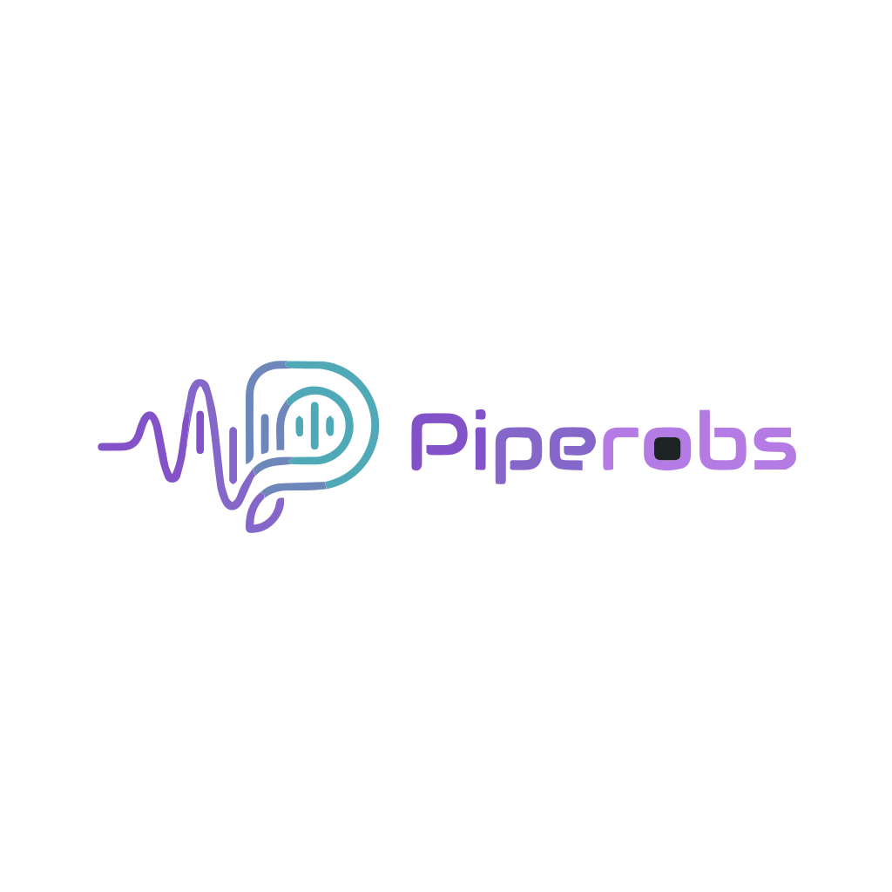

🎨 PiperObs · Logo Render Test
Versiones procesadas | Adobe → Color → Monocroma
📊 Versión COLOR — Fondo Oscuro

16px
22px (status bar)
32px
48px
64px
128px
256px
☀️ Versión COLOR — Fondo Claro
16px
32px
64px
128px
⚪ Versión MONOCROMA — currentColor (adaptable a tema)
Violeta
Cian
Rosa
Blanco
Gris
🎯 Test Crítico: Status Bar (22px)
Este es el tamaño real en que aparecería el logo en barras de estado / iconos pequeños. Si acá se reconoce bien, está listo para producción.
📈 Comparación: Tamaños de archivo
Original Adobe
✗ Con fondo gris embebido (#1E2326)
48.1 KB | 41 paths
Optimizado (Color)
✓ Fondo removido + SVGO 55% compresión
12.3 KB | Listo para producción
Monocroma
✓ Colores → currentColor (tema adaptable)
12.7 KB | 25 fills dinámicos
Ahorro total
✓ De 48KB a 12KB (74.5% más pequeño)
Ideal para web / icono en barra
📝 Archivos generados
✓ piperobs-mark-color.svg — versión a color optimizada
✓ piperobs-mark-mono.svg — versión monocroma con currentColor
✓ originals/piperobs-mark-adobe-original.svg — archivo original sin procesar
✓ discarded/ — versiones anteriores descartadas
🎯 Sistema de logo completo
Mark pequeño (UI)